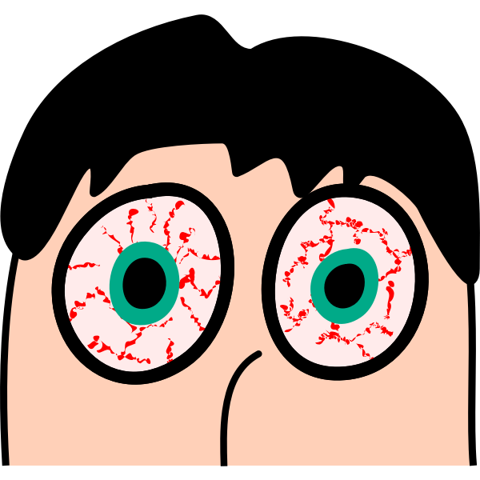
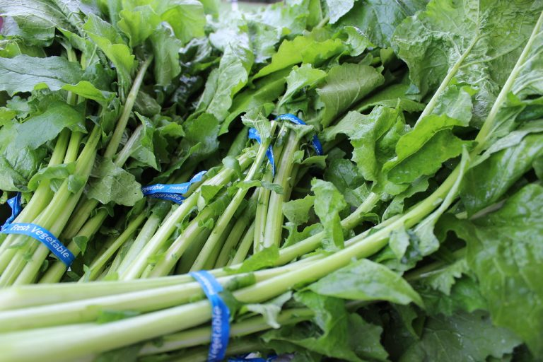

眼睛的养生保养
时常看见几个月大的婴儿抱着一台平板电脑熟练的点击着游戏时，小宝宝看起来无比可爱。小孩子们操作电子设备的能力似乎都是与生俱来的，从来不用大人们教却个个都能自学成才。从电子设备诞生以来，我们的生活从未如此方便。我们每天在电子设备上花费的时间越来越多，从而眼睛过度观看电子屏幕而导致眼部疾病也越来越多。为了我们自己和孩子的视力健康，请减少使用电子屏幕的时间，同时为修复视力损坏，选择食用更多对我们的眼睛有益的食物，例如胡萝卜，深绿叶蔬菜，蚕豆，南瓜等。
蓝光滤光镜
电子设备屏幕上发出的蓝光会引起视力疲劳。长期持续暴露在蓝光下会损害您的视网膜并引起黄斑变性。防止蓝光的最佳方法是减少屏幕时间。如果必须使用计算机或手机进行工作，则可以考虑贴放计算机屏幕蓝光过滤片。另一种选择是购买一副蓝光过滤眼镜。这种黄色眼镜可以帮助过滤掉部分蓝光对眼睛对直射，从而缓解长时间对着电子屏幕造成的眼睛疲劳。这也是我保护眼睛所采用的一种有效方法。
滋润眼药水

我曾经因为超时查阅电脑和手机导致我的眼睛发红不退，现在眼睛对蓝光还是特别敏感，不宜长时间对着屏幕。眼球上扩张的红血丝是因为我一直盯着屏幕导致眼睛过度劳损，而且屏幕发出的亮光也使我的眼睛变得非常的干涩缺水。我试了从药房买的红眼睛非处方药，使用的效果立竿见影，但是它并没有给我带来持久的效果，效用一过马上恢复之前的通红，治标不治本。还是要从根本上解决问题，非处方红眼药水的长期使用还可能会造成依赖性。解决红血丝的的最佳方法是让眼睛有足够的时间休息恢复。使用不含任何药用成分的眼部滋养水给干眼症补充水分。
维生素A和β-胡萝卜素

β-胡萝卜素是一种橙色色素（类胡萝卜素的一种），在体内可转化为维生素A。维生素A是维持眼睛健康和正常视力的重要营养素。我们的视网膜需要维生素A才能正常运作。没有足够的维生素A，我们的眼睛无法充分保湿。维生素A缺乏还会导致夜盲症和视力不佳。高维生素A膳食来源包括橙色色素的蔬菜和水果，深绿叶蔬菜，动物肝脏，鸡蛋等，食物列举如密瓜，胡萝卜，南瓜，地瓜，羽衣甘蓝，菠菜，西兰花等。日常对维生素A的摄入RDA建议为成人700-900 mcg /天。
玉米黄质和叶黄素
玉米黄质和叶黄素也是属于类胡萝卜素类别。研究人员发现玉米黄质和叶黄素可以减少与衰老相关的慢性眼病的风险，例如白内障和黄斑病变。叶黄素和玉米黄质通常沉积在眼睛的视网膜上。它们有助于过滤有害的蓝光而保护眼睛免受蓝光伤害。玉米黄质和叶黄素的食物来源自深绿色的绿叶蔬菜，例如羽衣甘蓝类，菠菜，萝卜青叶等。玉米黄质的膳食摄入建议为2毫克/天，叶黄素膳食摄入建议为10毫克/天。如果你每天的饮食摄入量不能满足你每天的玉米黄质和叶黄素需求，那么你可能要考虑服用玉米黄质和叶黄素补充剂。
糖尿病患者要保持正常血糖水平
失明（视网膜病变）是糖尿病患者中很常见的健康并发症之一。慢性失控的高血糖会损害视网膜的视神经和血管。这是导致美国人失明的主要原因。正确的管理控制好血糖非常重要。认真遵循医生，营养师或糖尿病咨询师的指导，合理安排日常饮食和正确掌握对胰岛素使用，把糖尿病对眼睛的伤害降到最低。
戒烟
因吸烟导致的氧化应激可加速视神经受损和黄斑变性。吸烟的人需要更多的抗氧化剂或类胡萝卜素来抵消吸烟带来的氧化反应的危害。只有及早戒烟才能对身心带来健康而提高生活质量。
眼部保养
当您感到眼睛倍感疲劳时，请马上远离电子设备的屏幕。休息至少20-30分钟，望向远处的绿色植物。绿色植物对光的吸收和反射可以舒缓眼睛不适。经常做一些眼部保健操以改善眼睛的血液循环。如果你感到眼睛干涩时，要注意多眨眼来保持眼内滋润。如果你要在户外呆比较久的时间，请戴上防紫外线太阳镜。多吃富含有橙色或深绿色蔬菜，水果，营养均衡的饮食。如果感觉你的眼睛在尝试以上方法还是无法缓解，请预约你的眼科医生做更全面的诊断。提早预防，发现和治疗眼部疾病是保证眼睛健康的关键。
VIDEO
影片由亮生活制作
回到上面
© 2022 Leading a Life of Wellness